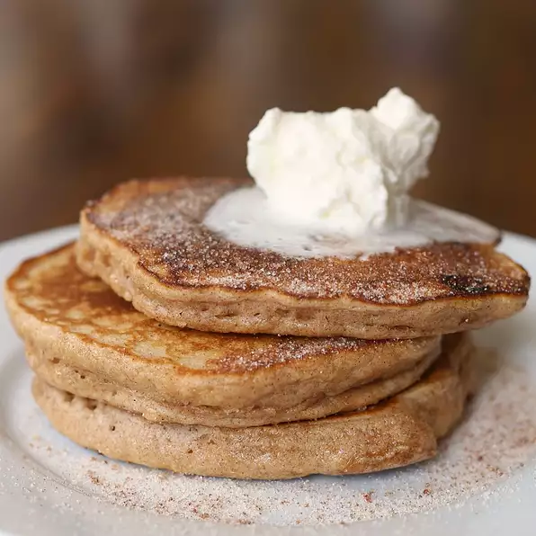

Snickerdoodle Pancakes

A delightful taste sensation.
Pancake Ingredients
- 1 cup all-purpose flour
- 2 tablespoons brown sugar
- 2 teaspoons ground cinnamon
- 1 teaspoon cream of tartar
- 1 teaspoon baking powder
- ½ teaspoon baking soda
- ½ teaspoon sea salt
- 1 cup buttermilk
- 1 egg
- 2 tablespoons butter, melted
- 1 teaspoon vanilla extract
Topping Ingredients
- ¼ cup white sugar
- 1 teaspoon ground cinnamon
- 5 tablespoons butter, melted
- 1 (7 ounce) can whipped cream (Optional)
Steps
- Combine flour, brown sugar, 2 teaspoons cinnamon, cream of tartar, baking powder, baking soda, and salt in a bowl with a whisk.
- Combine buttermilk, egg, butter, and vanilla extract in a small bowl. Beat to break up the egg. Pour into the flour mixture and stir until batter is foamy and just combined.
- Whisk white sugar and 1 teaspoon cinnamon together in a small bowl.
- Heat a large non-stick griddle over medium-low heat. Pour 1/3 cup batter onto the griddle and cook until bubbles form and the edges are dry, 3 to 4 minutes. Flip and cook until browned on the other side, 2 to 3 minutes. Repeat with remaining batter.
- Brush pancakes with the 5 tablespoons butter. Sprinkle each with 1 teaspoon of the cinnamon-sugar mixture. Top with whipped cream.